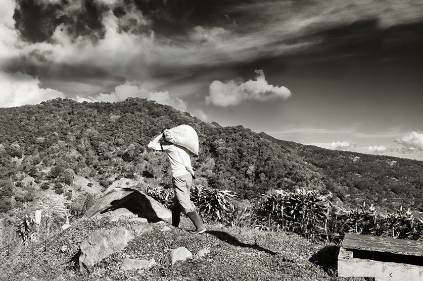

ไทย
ไทย
Exceptional coffee can only come from exceptional beans.
Starbucks Arabica beans are different from regular Arabica beans. At every step, we go to great lengths
to make sure our beans meet the highest standard of quality. How do
we do it? Glad you asked
We go where the best beans are: up.
The best beans grow at higher altitudes. The cold nights and warm days create denser beans. And denser
beans have deeper, more complex flavours. Taste them in every
cup of Starbucks coffee.
We’re for the good of all coffee
So if we can help a farmer grow better beans, we will. Any farmer, anywhere. To that end, we have farmer
support centres on four continents where our agronomists test
soils, examine samples and provide
advice, free, to any coffee farmer who asks.
We nurture deep-rooted relationships
The future of coffee is entwined with the future of coffee farmers. So we nurture those relationships the same way they nurture their beans. We work to get farmers a fair
price and to make sure everyone in the community can benefit from the coffee industry. It leads to better livelihoods for farmers, and a better cup of coffee for all of us.
We’re very picky at harvest.
We only pick the coffee cherries when they are at their peak. Red, ripe and perfect. After that, we sort them again and again based on size, colour, and density. Our
tolerance for defects? Pretty much zero. Some people might call that obsessive. We call it great coffee.

We taste – again and again and again.
We taste more than 1000 cups of coffee a day to verify the superior taste that all of us (including you) have come to expect. A batch of coffee is tasted at least three times
before it’s approved, so every time you take a sip of Starbucks® coffee, it’s a sip you’ll love.